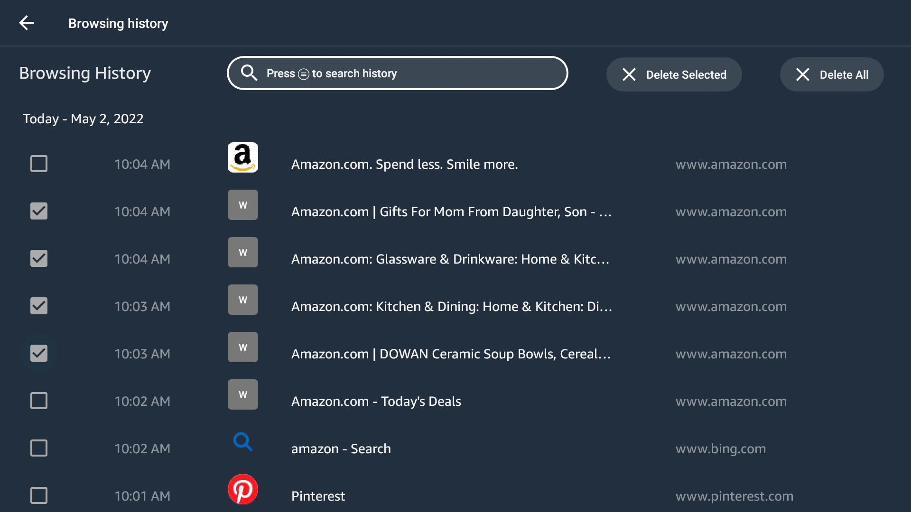
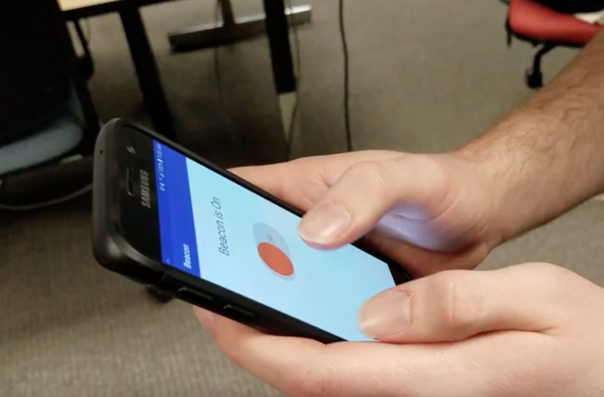

Summary
Six years as a software engineer on Amazon's Silk browser taught me how to ship things at scale — and taught me, just as clearly, what scale can't tell you about whether something actually works for the person using it. I'm now headed to a Master's in Human-Centered Design & Engineering at the University of Washington to close that gap properly.
Experience
Sep 2015 – May 2019
B.A. Computer Science & Statistics
Macalester College · Saint Paul, MN
Where I first got curious about whether AI could understand people, not just games.
Jul 2019 – Jun 2020
Data Integration Consultant
Concord USA · Hopkins, MN
Built a reusable integration template after noticing the same pattern repeated across client projects — my first lesson in fixing root causes, not symptoms.
Jul 2020 – May 2026
Software Development Engineer I → II
Amazon · Silk Browser, Fire TV
Shipped features used by millions, then realized I cared more about the "why" than the metrics.
Sep 2026 →
M.S. Human Centered Design & Engineering
University of Washington · Seattle, WA
Going back to school to make that "why" my actual job.
Highlights

Browsing History
(2021 – 2022)

Beacon — 911 Location Detection
(2017)